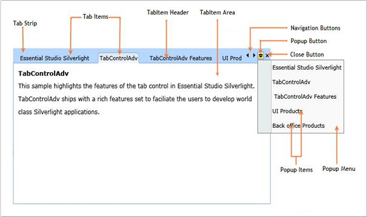

Figure 775:Control Structure
|
Control Elements
|
Description |
|
Tab Strip |
The Tab strip provides the layout for displaying the tab items |
|
Tab Items |
The Tab items represent the selectable items inside the TabControlAdv
|
|
Tab Item Header |
The Tab Item header is the text displayed in the Tab item |
|
Navigation Button (Scrolling Button) |
The Navigation buttons enable quick navigation through the Tab Items. This is also called as Scrolling buttons |
|
Close Button |
The Close button is used to close the currently selected Tab Item |
|
PopUp Menu |
The Pop-up Menu enables quick navigation through the Tab Items. It is very used to navigate quickly while the control is having many Tab Items |
|
PopUpMenu Item |
The Pop-up Menu Item represents the selectable item inside the Popup Menu |
|
PopUpMenu Button |
The Pop-up button is used for viewing the Popup Menu |